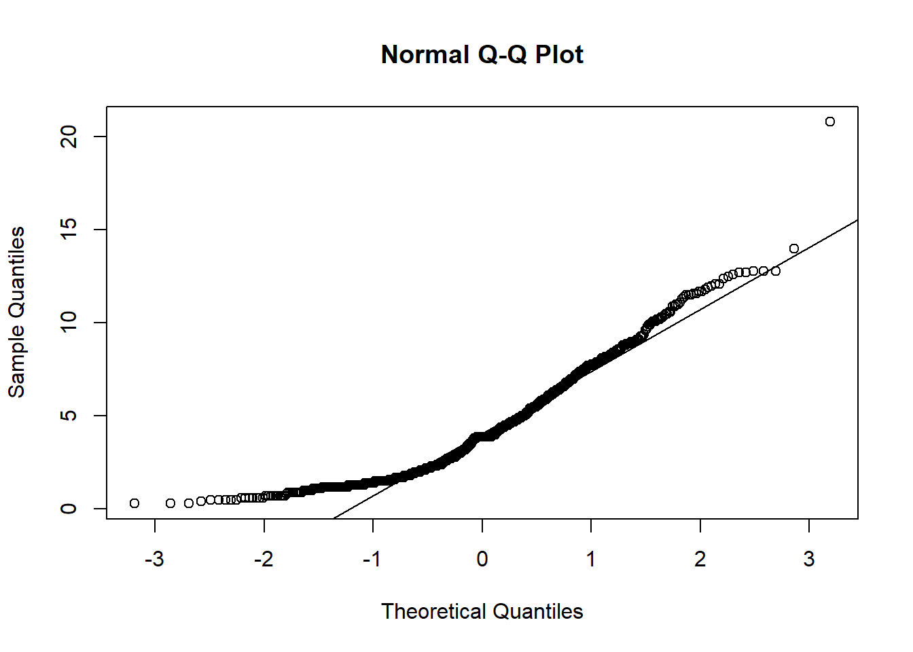

| Model | Independence | Normality | No_Outliers | Linearity | High_Dimensionality | Feature_Scaling |
|---|---|---|---|---|---|---|
| Logistic Regression | Yes | No | Yes | Yes | No | Yes |
| KNN | No | No | No | No | Yes | Yes |
| Naive Bayes | Yes | Yes | No | No | No | No |
| Decision Trees | No | No | No | No | No | No |
| Support Vector Machines | No | No | No | No | No | Yes |
9 Other Model Assumptions
The first step to understanding whether a machine learning model will be interpretable is understanding what underlying assumptions that model violates or complies with. Assumptions are concepts or conditions that a statistical model relies on for effectiveness. Each model relies on different assumptions, and knowing what model assumes what conditions is a key factor in deciding what model to use with your datasets. This is because if your model assumes condition x, but your data violates condition x, then the model outcomes will be less predictive and, in some cases, essentially useless. When assumptions are not met, the model’s outputs can be biased, inefficient, or inaccurate, leading to poor performance or incorrect conclusions. Every model has different assumptions that must be checked. For example, a logistic regression model assumes noncolinearity, independence of observations, and no strong outliers, while a decision tree model doesn’t assume independence and gives no assumption of linearity. It is best to look at each model independently when deciding what assumptions should be checked, and which are irrelevant.
In classification machine learning, some algorithms include: Logistic Regression, K Nearest Neighbors (KNN), Naive Bayes, Decision Trees/Random Forest, or Support Vector Machines (SVM). One of the benefits of using machine learning algorithms is that they offer a wider range of models capable of handling interdependent data and non-normally distributed residuals, unlike traditional statistical models like linear or logistic regression. As you can see in the below table, decision trees/Random forest do not have any underlying assumptions that need to be pre checked before running. Support Vector Machines only assume that you have scaled your predictor. K nearest neighbors (KNN) assumes feature scaling and that the data doesn’t suffer from high-dimensionality, which is another way of saying as observations approach the number of predictors. Naive Bayes has the second most constraints on our list, as it assumes both that your predictor variables are independent of each other (which is usually violated) and that any continuous predictor variables are normally distributed. Logistic regression has more limitations than our other algorithms, as it assumes that predictor variables are independent of each other, that there aren’t strong outliers, that there is a linear relationship between each predictor and the log odds, and that predictors are on the same scale.
The above table lists the model assumptions that need to be understood and investigated further. Make sure you investigate these assumptions per research question, as different questions will use different data. If an assumption is violated, you can either transform your data to meet the assumption or eliminate that test from your analyses. Below I will show you how to run checks for independence, normality, strong outliers, linearity, high dimensionality, and how to feature scale your data.
9.0.1 Independence
First, we will look at the independence assumption. This assumes that each observation is in no way influenced by or related to the measurements of other observations. Instead of checking this assumption with a test, it is best to think carefully though how your data was collected to determine if this has been violated. Some examples of when independence is violated include data that are repeated measures, longitudinal, or clustered in some other way. Our data was not independent because the ManyDogs data is nested within testing site. The ManyDogs data includes 20 different sites, so observations are more likely to be similar when they are from the same location. For the purposes of this tutorial, we will not run tests that need the independence assumption to be satisfied; however, if you want to run a test that requires independence, there are multiple ways of transforming data or accounting for independence in a model. One example would be to take the average values of dependent variables within the site, and then the data could be analyzed using logistic regression; however, this can greatly reduce the number of data points (in this case from 704 to 20). Another way is to use mixed effect models and include the location as a random effect. However, these are both outside the scope of this tutorial.
9.0.2 Normality
The second assumption we have to look at is normality. Our only test that requires normality is Naive Bayes, which assumes that continuous predictor variables are normally distributed. The normality assumption means your data roughly fits a bell shape if mapped as a histogram, with most data close to the middle of the total range and few extreme values. Technically, a normal distribution is one in which the mean and median are the same and located in the center of the distribution and 99.7% of the data is within 3 standard deviations of the mean. If normality is violated, you should either not run the model that assumes normality, or transform your data to become normally distributed. There are a number of different tests that can check for normality; however, we will use the two most often used that are easily interpretable: Quantile-quantile plot (Q-Q plots) and density plots. Q-Q plots plot the quantiles of two distributions against each other. For our purposes, it plots the quantiles predicted by a normal distribution against the actual data quantiles. If the points on the Q-Q plot follow the diagonal line representing the normal distribution, then you have a normal distribution. If the points significantly deviate from the plotted line, you do not have a normal distribution. For a density plot, you are looking for a bell shape.
Below is the R code that creates a Q-Q plot and then a density plot for the continuous variable we will use in research questions 1 and 2: training_score.
qqnorm(manydogs_missing_handled$training_score)
qqline(manydogs_missing_handled$training_score)plot(density(manydogs_missing_handled$training_score), main = "Density Plot of Training Score")You can see that the points on the Normal Q-Q Plot fall more on the line than not. If more than 25% of data doesn’t fall on the line, then it is unlikely you have normality. The line should also be symmetrical; if you have a curve in the line, you do not have normality. On the density plot, you are looking for no extra bumps on the the tails of the curve: the tails should approach 0 at a fairly constant rate. Note that the smaller the sample, the less descriptive plots can be, so it might be best to check other tests of normality if you aren’t sure after checking these plots. Normality tests include the Shapiro-Wilk test or Kolmogorov-Smirnov test. For help getting an intuitive sense of what is sufficiently normal see here for Q-Q plots, and here for density plots.
The above plots satisfy the normal distribution assumption. Training score is the only continuous variable in research questions 1 and 2, so we are done checking normality for these questions.
Research question 3, however, has multiple continuous variables so we have to check each of the continuous variables individually. Let’s make Q-Q and Density plots for each of the following continuous predictors used in RQ3: age, aggression score, attachment score, excitability score, fear score, miscellaneous score, and separation score. I’ll show you the first two, but they all have the same pattern.
#Plots for Age
age_qqplot <- qqnorm(manydogs_missing_handled$age)
qqline(manydogs_missing_handled$age)
age_density <- plot(density(manydogs_missing_handled$age), main = "Density Plot of Age")#Plots for Aggression
aggression_qqplot <- qqnorm(manydogs_missing_handled$aggression_score)
qqline(manydogs_missing_handled$aggression_score)aggression_density <- plot(density(manydogs_missing_handled$aggression_score), main = "Density Plot of Aggression")#Plots for Attachment
#attachment_qqplot <- qqnorm(manydogs_missing_handled$attachment_score)
#qqline(manydogs_missing_handled$attachment_score)
#attachment_density <- plot(density(manydogs_missing_handled$attachment_score), main = "Density Plot of Attachment")
#Plots for Excitability
#excitability_qqplot <- qqnorm(manydogs_missing_handled$excitability_score)
#qqline(manydogs_missing_handled$excitability_score)
#excitability_density <- plot(density(manydogs_missing_handled$excitability_score), main = "Density Plot of Excitability")
#Plots for Fear
#fear_qqplot <- qqnorm(manydogs_missing_handled$fear_score)
#qqline(manydogs_missing_handled$fear_score)
#fear_density <- plot(density(manydogs_missing_handled$fear_score), main = "Density Plot of Fear")
#Plots for Miscellaneous
#miscellaneous_qqplot <- qqnorm(manydogs_missing_handled$miscellaneous_score)
#qqline(manydogs_missing_handled$miscellaneous_score)
#miscellaneous_density <- plot(density(manydogs_missing_handled$miscellaneous_score), main = "Density Plot of Miscellaneous")
#Plots for Separation
#separation_qqplot <- qqnorm(manydogs_missing_handled$separation_score)
#qqline(manydogs_missing_handled$separation_score)
#separation_density <- plot(density(manydogs_missing_handled$separation_score), main = "Density Plot of Separation")Unfortunately, none of the plots for our research question 3 fit the normality assumption. We know this because the density plots do not show a smooth bell curve - there are multiple peaks, instead of just 1 in the center - and graphs aren’t symmetrical. For the Q-Q plots, the data has large deviations from the normality line with much more data than 25% not touching the line. There are also deviations on the tail ends, with both tails going off in different directions. Therefore, we do not have normality and cannot run a Naive Bayes model with this data.
For the purpose of this tutorial, we will conclude this section here. However, there are a number of ways to transform data to try and make continuous predictors conform to normality (i.e., log transformations, square root transformations, and more). Keep in mind as you investigate how to transform your data into a normal distribution that different transformations work better on different kinds of data issues (i.e., skewed data, data with many outliers, etc.). See here for a description of different kinds of transformations.
9.0.3 No Strong Outliers
Our next assumption, no strong outliers, is easy to understand but hard to implement, as there is no clear rule as to when to keep and when to delete outliers. The longer you work with data, the better your decisions for this and other questions become - but until that time, there are a few general rules you can follow. If you are working with thousands of data points with low dimensionality, deleting outliers is easier because you will have more data on which to base the decision on what is an outlier not worth investigating, and what is simply a trend with few respondents on a specific range of values.
But if you have a small amount of data (n<1000) like we do in this tutorial, it is best not to delete any observations. One exception to this rule is if you know for a fact a specific data point is incorrect or impossible, then it is okay to delete. For example, if a participant writes that they are 230 years old, you can be certain this was either a typo or error inputting the data, or they are a vampire and their responses should not be used to predict human behavior.
There are multiple ways to determine what is an outlier in your data. I am going to show you the one that is most widely applicable and easily understandable, the Interquartile Range (IQR) method. In this method, an outlier is considered a point that is above the 75th percentile or below the 25th percentile by a factor of 1.5 times the IQR. So, to calculate what points are outliers, it is as simple as making a boxplot. It is best to look at each of your predictor’s boxplots to investigate if the points you think are outliers are actually reasonable responses to the questions that just happen to be slightly out of bounds of the IQR, rather than incorrect or problematic data.
#Create a boxplot for age
age_boxplot <- boxplot(manydogs_missing_handled$age)#Pull out the values of the outliers
age_boxplot$out[1] 14.0 20.8Here you can see a visual representation of the data and what is calculated to be an outlier. The argument $out allows you to extract from the boxplot object a vector listing all the outliers. Here we see two extreme values are present, but the presence of these values alone doesn’t indicate anything is wrong, just that two points are slightly outside of the IQR. It is possible for a dog to be 20 years old, so this point is outside the IQR but not problematic.
Feel free to make boxplots for other variables in the data; however, I have looked through all the outliers and didn’t find anything suspicious or incorrectly inputted, so for the rest of this tutorial we will leave the other extreme values alone. For non-tutorial based projects a good rule of thumb is to have at least two or possibly three people look at and discuss which outliers to keep or delete based on best practices for your discipline.
If you want to delete the outliers, you can simply delete the observations listed in the $out vector.
One last note on outliers: The Z-score method is also used to detect outliers. However, Z scoring can introduce problems as it is calculated using the mean and standard deviation. If your data are skewed (which is often the case when we are considering data with outliers), Z-scoring ends up being overly liberal with defining what constitutes an outlier. The IQR is less sensitive than Z-scoring, which has the effect of erring on the side of keeping rather than getting rid of outliers. Again, you only want to get rid of values that are the result of measurement error, data entry error, or has unusual properties that show that that point is not part of the study population. See here for more information on when to keep or take out outliers.
9.0.4 Linearity
Linearity is our next assumption. Linearity assumes that each predictor in the model, when holding all the other predictors in the model constant, will change in a linear way with the outcome variable. (In other words, don’t put a line through something that is not a line). Unlike in linear regression, in logistic regression, we are looking at the log odds of the probability of the outcome (i.e., being in a particular category). To diagnose if this is true or not, we need to make a graph of this relationship and see if the plot satisfies the assumption. These plots are called a component plus resistance or CR plot, which can be made with the crPlots function in the car package.
We will make a plot for each continuous predictor per research question. We will break code into three sections, one for each research question. You do not need to check the categorical predictors as they are always linear. To read more about why this is see here.
#Basic logistic regression model with training_score predictor variable and outcome variable of whether the dog did above chance on the ostensive task
model_RQ_1 <- glm(ostensive_binary ~ training_score, data = manydogs_missing_handled, family = binomial)
crPlots(model_RQ_1, terms = ~training_score,
pch=20, col="gray",
smooth = list(smoother=car::gamLine))The dashed line on a CR plot is the relationship between the continuous predictor and the outcome variable, assuming linearity. The solid pink line represents the actual observed relationship in the data. If these two are very different, then the linearity assumption has been violated. If the two lines look similar, then linearity has been confirmed. As you can see in this plot, we do not have overlap between the two lines, so we have a deviation from linearity. When you do not have linearity you have two possible options: 1) do not run analyses that need a linear relationship in data (i.e., what we will do in this tutorial) or 2) transform the data to make it more linear. However, this isn’t possible with all data and you will have to transform and then recheck the assumption. See here for resources on how to transform nonlinear data into linear data.
Now let’s check linearity for question 2.
#Make basic logistic regression model with training_score predictor variable and outcome variable of whether the dog did above chance on the nonostensive task
model_RQ_2 <- glm(nonostensive_binary ~ training_score, data = manydogs_missing_handled, family = binomial)
crPlots(model_RQ_2, terms = ~training_score,
pch=20, col="gray",
smooth = list(smoother=car::gamLine))Similarly, in the data for research question 2, we do not have overlap between the two lines, so we have a deviation from linearity.
Finally, for the more complicated third research question, we have more than one predictor that is continuous, so we have to make a CR plot for each predictor variable in the model holding all others variables fixed (i.e., with the same values).
#Make basic logistic regression model with all predictors and outcome variable that measures whether the dog did better at the nonostensive task
model_RQ_3 <- glm(nonos_best ~ age + sex + desexed + purebred + gaze_follow + training_score + aggression_score + fear_score + separation_score + excitability_score + attachment_score + miscellaneous_score, data = manydogs_missing_handled, family = binomial)
age_crplot <- crPlots(model_RQ_3, terms = ~age,
pch=20, col="gray",
smooth = list(smoother=car::gamLine))#training_crplot <- crPlots(model_RQ_3, terms = ~training_score,
#pch=20, col="gray",
#smooth = list(smoother=car::gamLine))
#aggression_crplot <- crPlots(model_RQ_3, terms = ~aggression_score,
#pch=20, col="gray",
#smooth = list(smoother=car::gamLine))
#fear_crplot <- crPlots(model_RQ_3, terms = ~fear_score,
#pch=20, col="gray",
#smooth = list(smoother=car::gamLine))
#separation_crplot <- crPlots(model_RQ_3, terms = ~separation_score,
#pch=20, col="gray",
#smooth = list(smoother=car::gamLine))
#excitability_crplot <- crPlots(model_RQ_3, terms = ~excitability_score,
#pch=20, col="gray",
#smooth = list(smoother=car::gamLine))
#attachment_crplot <- crPlots(model_RQ_3, terms = ~attachment_score,
#pch=20, col="gray",
#smooth = list(smoother=car::gamLine))
#miscellaneous_crplot <- crPlots(model_RQ_3, terms = ~miscellaneous_score,
#pch=20, col="gray",
#smooth = list(smoother=car::gamLine))All eight of the plots we made for the continuous variables show near identical overlap between the two lines. Therefore, we have linearity between predictors and the log odds of the outcome variable and can move on to our next assumption! To save space and to make this tutorial less messy, I have only outputted one of the eight plots you need to check. However, when you are working through this tutorial, please look at all the plots to check this assumption.
9.0.5 Feature Scaling
Feature scaling or normalization is sometimes misinterpreted as needing to transform predictors to be normally distributed, which we already went over in the normality section of assumption checks. Instead, feature scaling is the process of transforming data to ensure that all the predictors in the model are being analyzed on the same scale. Feature scaling allows you to accurately compare two predictors that have different magnitudes. For instance, if you have a data set looking at what ages and income levels are associated with middle class status (binary category), certain algorithms will misclassify data points simply because the larger range on the scale of income will artificially inflate the difference between age/income and middle-class status. Feature scaling also helps algorithms converge faster and takes less processing power.
Now that you know why we transform predictors by scaling them, let’s scale our continuous predictors. There are several ways to transform predictors that all do slightly different things to the data, but for now we will transform our data with the most commonly used transformation: Z-scores. Z-scores transform a column of values into a new variable with a mean of 0 and standard deviation of 1 by subtracting the original value by the mean of the column, and dividing that new number by the standard deviation. This process makes the range and magnitude of our columns easily comparable so outcomes are more reliable and interpretable. (Note: this is different from the Z-score outlier detection we discussed above - here, Z-scores are our friends!)
To see explanations of other types of transformations see this great guide on R pubs.
We will use the function scale to apply the z-score function to our continuous predictor columns. This function comes with base R, so no need to install another package.
manydogs_transformed <- manydogs_missing_handled %>%
mutate_at(vars(age, training_score, aggression_score, fear_score, separation_score, excitability_score, attachment_score, miscellaneous_score), scale)Now we can use this dataset for the rest of our analyses!